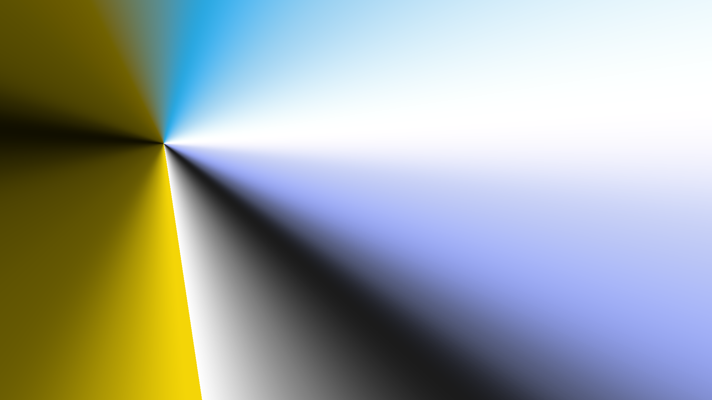

Both renderings use the same image (#tintedScene) as the light. v1 is the previous HSV-based script; v2 adds blackbody light colours, partial colour constancy (CAT16), cool/bounce fill light, Oklab highlight handling, soft penumbra and dithering.
